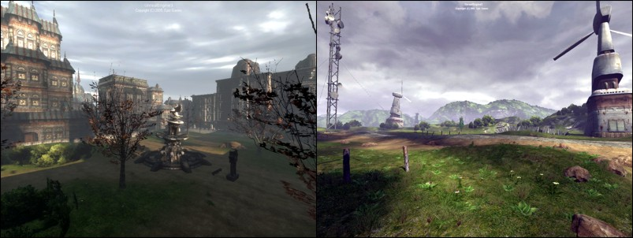
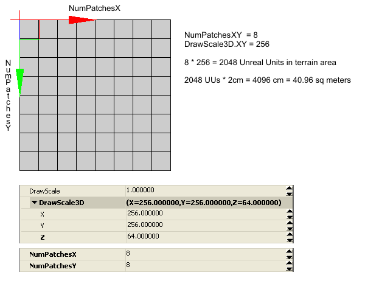

UDN
Search public documentation:
TerrainDesignCH
English Translation
日本語訳
한국어
Interested in the Unreal Engine?
Visit the Unreal Technology site.
Looking for jobs and company info?
Check out the Epic games site.
Questions about support via UDN?
Contact the UDN Staff
日本語訳
한국어
Interested in the Unreal Engine?
Visit the Unreal Technology site.
Looking for jobs and company info?
Check out the Epic games site.
Questions about support via UDN?
Contact the UDN Staff
地形设计：指南和信息
概述

地形创建 一般使用这两种技术其中的一种来创建地形： 直接在地形网格物体上手动地描画来创建山坡和峡谷；或者导入外部创建的地形高度图。另外，高度图信息可以从 DEMs- Digital Elevation Model(数字高程模型)中获得。展现泥土、草原和岩石的材质层可以使用地形alpha贴图来创建，地形alpha贴图可以决定贴图混合到地形中的位置。 地形应用和地图布局 地形也可以用于一些小区域，比如城市、围绕起来的院子甚至模仿堆积起来的残骸；或者整个游戏地图可以基于一个大的室外地形设计，这个地形可以由各种地理特点组成比如山脉和峡谷。 地形通常和专门设计的地理网格物体结合使用，从而构建大的石头、孤立的山丘、悬崖甚至水上飞机。其它的网格物体也可以用作为出现在地形上的各种各样的植被。使用地形进行视频游戏的地图设计及布局的地图，通常会使用地形来在游戏播放区域的周围创建不可通行的山脉或悬崖，从而可以限制游戏玩家的运动，并防止他们离开或跌落到游戏地图“世界”的外面。 地形系统在本质上渲染一个X*Y排网格物体三角形，它们的顶点Z值决定了在每个网格的十字交叉处的三角形的海拔高度。其中关卡设计人员面临的一个挑战是它们需要为这个地形网格物体选择适当的布局和分辨率，使得地形相对于性能设置产生最好的视觉质量。 地形尺寸
虚幻引擎3支持的最大的世界尺寸是512k x 512k (524288 x 524288) 个虚幻单位。如果按照默认的引擎单位1UU=2cm(10km x 10km)计算，这大约近似等于10平方千米。游戏性区域的实际尺寸通常远比这个尺寸小，一般基于地形的室外地图的尺寸少于1平方千米。注意，那些放置在最大世界尺寸外面的几何体，比如天空球体，仍然是进行渲染的，但是“世界”几何体必须在这个总的可用区域之内。
地形高度图XY分辨率和通过Terrain.NumPatches设置的一样， 也就是128x128 或 256x256，Display.DrawScale指出了每个地形块的尺寸，这样便最终决定了地形网格物体的总面积。为块尺寸和块数量选择最有效的一组值，从而在地形细节和渲染性能之间寻找最好的平衡。
由于性能和文件大小的原因，我们不推荐您创建大于1024x1024块的地形。比如，一个2048x2048的地形包含8百万个三角形，当在编辑器中运行时速度很慢并且会导致生成一个非常大的地图文件。在大多数情况下，即使块为512x512的地形都可能导致某些技术问题，至于使用如此大的地形是否是个合适的选择，需要尽可能地检查和重新评估地图设计来进行决定。
高度图 位-深度
当使用外部高度贴图文件创建地图时，为了将其导入到虚幻引擎地形系统中，通常使用16-位的高度图格式和文件。如果由于标准绘图软件支持的方便选择使用8-位的灰度高度图文件，那么将会导致地形仅使用1/256的可用高度范围。这通常会导致地形呈现出令人不爽的阶梯式的梯田的外观。
当使用外部高度图文件时，我们不推荐您使用标准的绘图软件在高度图上描画细节，因为它仅能在当前的视频软件上编辑和显示8-位的灰度化图。这意味着对于描画到8-位显示系统上的灰度化图的每个单独的颜色来说，实际上有256个高度水平不能真正地显示出来。换句话说，在一个8-位的灰度化显示上，值0(黑色)实际上是从0到255的16-位值，值为1实际上是指256到511的16-位值，等。
地形尺寸
虚幻引擎3支持的最大的世界尺寸是512k x 512k (524288 x 524288) 个虚幻单位。如果按照默认的引擎单位1UU=2cm(10km x 10km)计算，这大约近似等于10平方千米。游戏性区域的实际尺寸通常远比这个尺寸小，一般基于地形的室外地图的尺寸少于1平方千米。注意，那些放置在最大世界尺寸外面的几何体，比如天空球体，仍然是进行渲染的，但是“世界”几何体必须在这个总的可用区域之内。
地形高度图XY分辨率和通过Terrain.NumPatches设置的一样， 也就是128x128 或 256x256，Display.DrawScale指出了每个地形块的尺寸，这样便最终决定了地形网格物体的总面积。为块尺寸和块数量选择最有效的一组值，从而在地形细节和渲染性能之间寻找最好的平衡。
由于性能和文件大小的原因，我们不推荐您创建大于1024x1024块的地形。比如，一个2048x2048的地形包含8百万个三角形，当在编辑器中运行时速度很慢并且会导致生成一个非常大的地图文件。在大多数情况下，即使块为512x512的地形都可能导致某些技术问题，至于使用如此大的地形是否是个合适的选择，需要尽可能地检查和重新评估地图设计来进行决定。
高度图 位-深度
当使用外部高度贴图文件创建地图时，为了将其导入到虚幻引擎地形系统中，通常使用16-位的高度图格式和文件。如果由于标准绘图软件支持的方便选择使用8-位的灰度高度图文件，那么将会导致地形仅使用1/256的可用高度范围。这通常会导致地形呈现出令人不爽的阶梯式的梯田的外观。
当使用外部高度图文件时，我们不推荐您使用标准的绘图软件在高度图上描画细节，因为它仅能在当前的视频软件上编辑和显示8-位的灰度化图。这意味着对于描画到8-位显示系统上的灰度化图的每个单独的颜色来说，实际上有256个高度水平不能真正地显示出来。换句话说，在一个8-位的灰度化显示上，值0(黑色)实际上是从0到255的16-位值，值为1实际上是指256到511的16-位值，等。
 保持在网格上
地形actor的Advanced.bEdShouldSnap属性应该总是保持为选中状态(True)，以便地形块仍然保持在网格上。这个选项和值为2的幂数的Display.DrawScale 和 Display.DrawScale3D.X/.Y结合使用，将会使得所有的块都能正确地符合到网格的所有边缘上。
一旦地形actor被移动到地形中的某个位置，请确保设置Advanced.bLockLocation为选中状态(true)，从而可以锁定地形actor，并且可以阻止它在编辑器中的意外移动。
保持在网格上
地形actor的Advanced.bEdShouldSnap属性应该总是保持为选中状态(True)，以便地形块仍然保持在网格上。这个选项和值为2的幂数的Display.DrawScale 和 Display.DrawScale3D.X/.Y结合使用，将会使得所有的块都能正确地符合到网格的所有边缘上。
一旦地形actor被移动到地形中的某个位置，请确保设置Advanced.bLockLocation为选中状态(true)，从而可以锁定地形actor，并且可以阻止它在编辑器中的意外移动。
 2的幂数
通常在使用地形和其它游戏资源时，会遇到短语"power-of-two(2的幂数)"。2的幂数是指根据公式2^n计算出的值，这里的n是任何大于等于0的数。比如2^0 = 1. 2^1 = 2. 2^2 = 4. 2^3 = 8. 2^4 = 16等。一般用于地形的2的幂数的值包括1, 2, 4, 8, 16, 32, 64, 128, 256, 512, 1024。
2的幂数
通常在使用地形和其它游戏资源时，会遇到短语"power-of-two(2的幂数)"。2的幂数是指根据公式2^n计算出的值，这里的n是任何大于等于0的数。比如2^0 = 1. 2^1 = 2. 2^2 = 4. 2^3 = 8. 2^4 = 16等。一般用于地形的2的幂数的值包括1, 2, 4, 8, 16, 32, 64, 128, 256, 512, 1024。
块的数量

NumPatches属性所支持的精确的数值根据Terrain.MaxTesselationLevel 和 Terrain.MinTesselationLevel而变化。比如，NumPatches的值是否可以是40 或 85 或 甚至 255 或 256，它是根据TesselationLevel的不同而变化的。 如果MaxTesselationLevel 和 MinTesselationLevel属性都设置为1，那么地形尺寸便可以指定任何在1和支持的最大地形尺寸之间的任何尺寸。这允许您创建尺寸为奇数的地形，比如41x79。当TesselationLevel的值为1时的缺点是平截头体中的所有地形三角形都将会描画，且不会使用动态距离LOD细分优化系统。这对于较小的地形块是可以接受的，但是对于大的地形系统，这将会对渲染的地图的帧频率造成影响。 注意： 由于性能和文件大小的原因，我们不推荐您创建大于1024x1024块的地形。比如，一个2048x2048的地形包含8百万个三角形，当在编辑器中运行时速度很慢并且会导致生成一个非常大的地图文件。在大多数情况下，即使块为512x512的地形都可能导致某些技术问题，至于使用如此大的地形是否是个合适的选择，需要尽可能地检查和重新评估地图设计来进行决定。 MinTesselationLevel属性的默认值通常设置为1。如果它被设置为和MaxTesselationLevel属性相同的值，那么结果将会和把它们两个的属性都设置为1一样，不会发生多边形细分。如果MinTesselationLevel设置为MaxTesselationLevel的一半， 也就是Min = 2 和 Max = 4，那么多边形细分区域的数量将会变少并且较远距离的地形将不会具有增加的优化块。换句话说，如果Min:Max的比值为1：4，将会导致两个优化的距离区域，如果Min:Max比值为2：4将会导致仅有一个优化的距离区域。 如果MaxTesselationLevel的设置为除1以外的其它值来启用距离LOD优化系统，那么NumPatches值则必须限定为MaxTesselationLevel值的倍数。比如，如果MaxTesselationLevel是4，那么NumPatches可以是12, 16, 20, 24, ...,等。如果MaxTesselationLevel是8，那么NumPatches的值可以是8, 16, 24, 32, 40, 48, ...,等。强烈推荐您使用动态距离LOD多边形细分优化，尽管这样会限制地形的尺寸仅能为MaxTesselationLevel的倍数。
描画比例
 Draw Scale Z(描画比例Z)
DrawScale3D.Z属性决定了沿着Z方向(上下方向)的每个地形网格物体顶点位置的 间隔尺寸 。DrawScale3D.Z的值越低，高度阶梯越细致； DrawScale3D.Z值越大，高度阶梯越大。因为总共只有65536高度值，所以DrawScale3D.Z也决定了地形的所有高度范围。
DrawScale3D.Z上还有一些其它的信息，在下面进行了介绍。
Draw Scale Z(描画比例Z)
DrawScale3D.Z属性决定了沿着Z方向(上下方向)的每个地形网格物体顶点位置的 间隔尺寸 。DrawScale3D.Z的值越低，高度阶梯越细致； DrawScale3D.Z值越大，高度阶梯越大。因为总共只有65536高度值，所以DrawScale3D.Z也决定了地形的所有高度范围。
DrawScale3D.Z上还有一些其它的信息，在下面进行了介绍。
地形块尺寸区域
| DrawScale(描画比例) | 块尺寸(虚幻单位) | 块尺寸(米) | 块尺寸(英尺) |
|---|---|---|---|
| 64 | 64 uus | 1.28m (128cm) | 4.2ft (50.39 in) |
| 80 | 80 uus | 1.60m (160cm) | 160.02cm (159.99 cm) |
| 96 | 96 uus | 1.92m (192cm) | 192.02cm (192.00 cm) |
| 112 | 112 uus | 2.24m (224cm) | 224.03cm (224.00 cm) |
| 128 | 128 uus | 2.56m (256cm) | 256.03cm (256.01 cm) |
| 160 | 160 uus | 3.20m (320cm) | 320.04cm (319.99 cm) |
| 192 | 192 uus | 3.84m (384cm) | 384.05cm (384.00 cm) |
| 224 | 224 uus | 4.48m (448cm) | 448.06cm (448.01 cm) |
| 256 | 256 uus | 5.12m (512cm) | 512.06cm (511.99 cm) |
| 288 | 288 uus | 5.76m (576cm) | 576.07cm (576.00 cm) |
| 320 | 320 uus | 6.40m (640cm) | 640.08cm (640.00 cm) |
| 352 | 352 uus | 7.04m (704cm) | 704.09cm (704.01 cm) |
| 384 | 384 uus | 7.68m (768cm) | 768.10cm (767.99 cm) |
| 512 | 512 uus | 10.24m (1,024cm) | 1,024.13cm (1,024.00 cm) |
地形尺寸对地图文件大小
- 具有一个地图actor和一个定向光源的空的干净的地图。
- 没有地形层。
- 没有经过烘焙。
| 高度图 | 三角形数量 | 文件大小 |
|---|---|---|
| 64x64 | 8,192 | 125kb |
| 128x128 | 32,768 | 3.2MB |
| 256x256 | 131,072 | 7.2MB |
| 512x512 | 524,288 | 28.7MB |
| 1024x1024 | 2,097,152 | 110MB |
- 具有一个地图actor和一个定向光源的空的干净的地图。
- 一个1024x1024的贴图、一个TerrainMaterial(地形材质)、和一个TerrainLayerSetup(地形层设置)。
- 没有经过烘焙。
| 高度图 | 三角形数量 | 文件大小 |
|---|---|---|
| 64x64 | 8,192 | 4MB |
| 128x128 | 32,768 | 6.38MB |
| 256x256 | 131,072 | 10.6MB |
| 512x512 | 524,288 | 32.9MB |
| 1024x1024 | 2,097,152 | 118MB |
地形尺寸对地图面积
| NumPatches(块数量) | DrawScale(描画比例) | 长度(Unreal Units) | 米 | 英尺 |
|---|---|---|---|---|
| 64 | 64 | 4096 uus | 81.92 m | 268.77 ft |
| 64 | 96 | 6144 uus | 122.88 m | 12,288.01 cm |
| 64 | 128 | 8192 uus | 163.84 m | 16,383.91 cm |
| 64 | 192 | 12288 uus | 245.76 m | 24,576.02 cm |
| 64 | 256 | 16384 uus | 327.68 m | 32,765.09 cm |
| 64 | 384 | 24576 uus | 491.52 m | 49,152.05 cm |
| 64 | 512 | 32768 uus | 655.36 m | 65,535.96 cm |
| 128 | 64 | 8192 uus | 163.84 m | 16,383.91 cm |
| 128 | 96 | 12288 uus | 245.76 m | 24,576.02 cm |
| 128 | 128 | 16384 uus | 327.68 m | 32,765.09 cm |
| 128 | 192 | 24576 uus | 491.52 m | 49,152.05 cm |
| 128 | 256 | 32768 uus | 655.36 m | 65,535.96 cm |
| 128 | 384 | 49152 uus | 983.04 m | 98,304.10 cm |
| 128 | 512 | 65536 uus | 1.3km (1310.72 m) | 4300.26 ft |
| 256 | 64 | 16384 uus | 327.68 m | 32,765.09 cm |
| 256 | 96 | 24576 uus | 491.52 m | 49,152.05 cm |
| 256 | 128 | 32768 uus | 655.36 m | 65,535.96 cm |
| 256 | 192 | 49152 uus | 983.04 m | 98,304.10 cm |
| 256 | 256 | 65536 uus | 1.3km (1310.72 m) | 4300.26 ft |
| 256 | 384 | 98304 uus | 1.97km (1966.08 m) | 1.22 miles (6450.39 ft) |
| 256 | 512 | 131072 uus | 2.6km (2,621.44 m) | 2.62 km (262,143.85 cm) |
| 512 | 64 | 32768 uus | 655.36 m | 65,535.96 cm |
| 512 | 96 | 49152 uus | 983.04 m | 98,304.10 cm |
| 512 | 128 | 65536 uus | 1.31km (1310.72 m) | 4300.26 ft |
| 512 | 192 | 98304 uus | 1.97km (1966.08 m) | 1.22 miles (6450.39 ft) |
| 512 | 256 | 131072 uus | 2.62km (2621.44 m) | 1.63 miles (8600.52 ft) |
| 512 | 384 | 196608 uus | 3.93km (3932.16 m) | 2.44 miles (12900.79 ft) |
| 512 | 512 | 262144 uus | 5.24km (5242.88 m) | 3.26 miles (17201.05 ft) |
| 1024 | 64 | 65536 uus | 1.31km (1310.72 m) | 4300.26 ft |
| 1024 | 96 | 98304 uus | 1.97km (1966.08 m) | 1.22 miles (6450.39 ft) |
| 1024 | 128 | 131072 uus | 2.62km (2621.44 m) | 1.63 miles (8600.52 ft) |
| 1024 | 192 | 196608 uus | 3.93km (3932.16 m) | 2.44 miles (12900.79 ft) |
| 1024 | 256 | 262144 uus | 5.24km (5242.88 m) | 3.26 miles (17201.05 ft) |
| 1024 | 384 | 393216 uus | 7.86km (7864.32 m) | 4.89 miles (25801.57 ft) |
| 1024 | 512 | 524288 uus | 10.49km (10485.76 m) | 6.52 miles (34402.1 ft) |
优化地形
- DrawScale XY一般使用256和512之间的值并且最好不要低于128。低于128的值将会渲染密集的网格物体，那将会需要很大的渲染力度。
- 要充分地利用内置的距离LOD多边形细分功能，可以通过设置Terrain.MinTesselationLevel 为1并且 Terrain.MaxTesselationLevel为4来获得该功能。禁用多边形细分功能通常会导致在平截头体中渲染更多的地形三角形，从而需要更大的渲染力度。
- 限制应用到地形上的材质的数量。应用的材质越少设置越简单，则渲染速度越快。
- 隐藏地形中永远不能看到的或者放置在其它几何体和资源比如CSG画刷或StaticMesh物体下面的三角形。这可以通过使用Visibility Tool(可见性工具)编辑地形，然后点击您想隐藏的块来实现。设置为隐藏的地形区域必须足够的大，以便可以获得很大的性能提高，从而这样做才值得，换句话说，不要隐藏在每个箱子、桶或树下的一个独立的块。
描画比例XY 及下沉地图资源
 当创建类似于CSG(构造实体几何)和静态网格物体的资源来在地图中进行应用时，通常使用的一个惯例是缩放所有的资源以便它们可以正确地匹配到2的幂数的网格空间内。如果地形块的尺寸也缩放为2的幂数，那么陷入到地形中的类似于网格物体建筑物的资源将会整齐地沿着地形块的边缘进行排列，并且这些在内部不可见的块或者沉下资源的下面的块通常可以通过使用Terrain Visibility Tool(地图可见性工具)来进行可能的性能优化。如果资源具有内部，比如建筑物，那么在建筑物内部的地形块必须被隐藏，从而保证它们不会妨碍玩家在建筑内部的运动。
当创建类似于CSG(构造实体几何)和静态网格物体的资源来在地图中进行应用时，通常使用的一个惯例是缩放所有的资源以便它们可以正确地匹配到2的幂数的网格空间内。如果地形块的尺寸也缩放为2的幂数，那么陷入到地形中的类似于网格物体建筑物的资源将会整齐地沿着地形块的边缘进行排列，并且这些在内部不可见的块或者沉下资源的下面的块通常可以通过使用Terrain Visibility Tool(地图可见性工具)来进行可能的性能优化。如果资源具有内部，比如建筑物，那么在建筑物内部的地形块必须被隐藏，从而保证它们不会妨碍玩家在建筑内部的运动。

描画比例Z对高度范围
 高度范围
以下表格列出了常用的DrawScale3D.Z值和它所支持的等价的最大高度范围，即从最低到最高的高度图值(0或黑色是最低G16高度，65535或白色是最高G16高度)。在实际应用中DrawScale3D.Z的值很少大于64。如果导入了一个外部G16高度图文件并且它需要DrawScale3D.Z的值大于从64到128之间的值，那么便应该改变高度图，以便它正在使用更多的可用的16-位范围，从而使的任何编辑的间隔尺寸和描画过程中的顶点移动是精致的。
1个Display.DrawScale3D.Z 单位 =总的高度图高度范围的512Unreal Units，所以这时实际比是1：512。
把您想使用的总高度范围(以Unreal Units为单位)和512相除便获得了您应该使用的DrawScale3D.Z的值。
每个梯级的UUs值是最大的高度范围除以16位高度图分为65536所得出的值。
1 Unreal Unit = 2厘米. 1 英尺 = 30.48cm 或 0.3048 米。1 米 = 3.280839895 英尺. 1000 米 = 1 千米. 5280 英尺 = 1 英里。
高度范围
以下表格列出了常用的DrawScale3D.Z值和它所支持的等价的最大高度范围，即从最低到最高的高度图值(0或黑色是最低G16高度，65535或白色是最高G16高度)。在实际应用中DrawScale3D.Z的值很少大于64。如果导入了一个外部G16高度图文件并且它需要DrawScale3D.Z的值大于从64到128之间的值，那么便应该改变高度图，以便它正在使用更多的可用的16-位范围，从而使的任何编辑的间隔尺寸和描画过程中的顶点移动是精致的。
1个Display.DrawScale3D.Z 单位 =总的高度图高度范围的512Unreal Units，所以这时实际比是1：512。
把您想使用的总高度范围(以Unreal Units为单位)和512相除便获得了您应该使用的DrawScale3D.Z的值。
每个梯级的UUs值是最大的高度范围除以16位高度图分为65536所得出的值。
1 Unreal Unit = 2厘米. 1 英尺 = 30.48cm 或 0.3048 米。1 米 = 3.280839895 英尺. 1000 米 = 1 千米. 5280 英尺 = 1 英里。| DrawScale3D.Z | Max Altitude(最大高度) | UU/梯级 | 范围(米) | 毫米/梯级 | 范围(英尺) | 英寸/体积 |
|---|---|---|---|---|---|---|
| 1 | 512 uus | 0.0078125 | 10.24 m | 0.15625 | 33.6 ft | 0.00615" |
| 2 | 1024 uus | 0.015625 | 20.48 m | 0.3125 | 2,047.95 cm | 0.0123" |
| 4 | 2048 uus | 0.03125 | 40.96 m | 0.625 | 4,095.90 cm | 0.0246" |
| 8 | 4096 uus | 0.0625 | 81.92 m | 1.25 | 8,192.11 cm | 0.0492" |
| 16 | 8,192 uus | 0.125 | 163.84 m | 2.5 | 16,383.91 cm | 0.0984" |
| 24 | 12,288 uus | 0.1875 | 245.76 m | 3.75 | 24,576.02 cm | 0.148" |
| 32 | 16,384 uus | 0.25 | 327.68 m | 5.0 | 32,767.83 cm | 0.197" |
| 48 | 24,576 uus | 0.375 | 491.52 m | 7.5 | 49,152.05 cm | 0.295" |
| 64 | 32,768 uus | 0.5 | 655.36 m | 10.0 | 65,535.96 cm | 0.394" |
| 80 | 40,960 uus | 0.625 | 819.20 m | 12.5 | 81,919.88 cm | 0.492" |
| 96 | 49,152 uus | 0.75 | 983.04 m | 15.0 | 98,304.10 cm | 0.591" |
| 112 | 57,344 uus | 0.875 | 1.15km (1,146.88 m) | 17.5 | 3762.73 ft | 0.689" |
| 128 | 65,536 uus | 1.0 | 1.31km (1,310.72 m) | 20.0 | 4300.26 ft | 0.787" |
| 256 | 131,072 uus | 2.0 | 2.62km (2,621.44 m) | 40.0 | 1.63 miles (8600.52 ft) | 1.575" |
| 512 | 262,144 uus | 4.0 | 5.24km (5,242.88 m) | 80.0 | 3.26 miles (17201.05 ft ) | 3.15" |
| 1024 | 524,288 uus | 8.0 | 10.49km (10,485.76 m) | 160.0 | 6.52 miles (34402.1 ft) | 6.3" |
| 2048 | 1,048,576 uus | 16.0 | 20.97km (20,971.52 m) | 320.0 | 20.97 km (2,097,152.02 cm) | 12.6" |